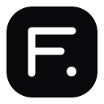

روشن: حرکت موس از دکمه به منوی hover فرصت امن دارد و منو ناگهانی بسته نمی شود.
خاموش: رفتار اصلی سایت بدون محافظ مسیر موس باقی می ماند.
پرشین یاریه ابزار برای کمک به پارسی زبانان · ...
تایپوگرافی این سایتخاموش
پرشین یارTypography · 文字 · العربية
یک فونت برای همه زبان هاهمان فونت را روی همه زبان ها اعمال می کند.
FA
فارسیاین یک نمونه متن فارسی است
EN
EnglishThe quick brown fox jumps
AR
العربيةهذا مثال للنص العربي
ZH
简体中文这是一个中文字体示例
افزایش اندازه فونتبه اندازه فعلی هر متن اضافه می شود
تراز
وزن
نمایش اعدادبدون تغییر، فارسی، لاتین یا عربی
افزایش اندازه اعدادفقط به اندازه فعلی عددها اضافه می شود
استایل ایموجی...
پک انتخابی دانلود و در کش افزونه نگه داشته می شود.
بومی سازی فارسی سایتBETA 1428
عبارت های رابط انگلیسی شناخته شده را فقط وقتی تطبیق دقیق داشته باشند به فارسی تبدیل می کند؛ متن پست ها دست نمی خورد.
انیمیشن نرمBETA
حرکت های رابط سایت را ملایم تر می کند و به تنظیم Reduce Motion سیستم احترام می گذارد.
Hover و Focusتغییر رنگ و شفافیت کنترل ها
باز شدن منوهاOrigin-aware pop سبک
Staggerورود مرحله ای آیتم ها
Cross-fadeتغییر نرم متن و state
Morphبازخورد تغییر وضعیت کنترل
Shared layoutجابجایی کوتاه آیتم های منو
Rubber bandبازخورد فشردن دکمه
Safe polygonمنوی hover هنگام حرکت موس بسته نمی شود
ورود نرم لیست هاآیتم های تازه فقط Fade می شوند
Shimmer بارگذاریفقط Placeholderهای واقعی سایت
Tooltip intent delayاولین تولتیپ با مکث؛ بعدی ها فوری
Tabular numsثبات عرض تایمر، قیمت و شمارنده
Scroll fadeنشانه ظریف برای ادامه لیست
Slider morphبازخورد نرم تغییر اسلایدر
Shared elementپیوستگی تصویر از آیتم به جزئیات
Icon cross-fadeتعویض نرم آیکون دکمه ها
گرد کردن هوشمند گوشه هافقط کنترل های تقریبا تیز را نرم می کند؛ آواتار و دکمه های گرد دست نخورده می مانند.
یکسان سازی گوشه های گردگوشه هایی که از قبل گرد هستند را به یک شعاع یکسان تبدیل می کند.
حذف سایه های سایتBox shadow و text shadow را حذف می کند.
اسکرول نرماسکرول ماوس و جابه جایی های برنامه ای را نرم تر می کند.
استایل سایتBETA
بهبودهای ظاهری اختیاری؛ بدون دستکاری ابعاد و ساختار اصلی
دارک هوشمندسطوح روشن خنثی را تیره می کند
سبک های آمادهیک سبک را انتخاب کن؛ بعد هم می توانی ریز تنظیمش کنی.
رنگ های سفارشیپس زمینه، متن، تاکید و حاشیه خطی
شیشه مایعمنوها و پنل های شناور شیشه ای
استایل خطیمرزهای ظریف به جای عمق اضافی
منوهای کشویی بهترهماهنگ با رنگ بندی سایت
Focus واضححلقه فوکوس قابل دسترس
فیلدهای ورودی تمیزبدون تغییر اندازه ورودی ها
شیشه مایع واقعیفقط روی هدر، سایدبار، منو و پنل های رابط اعمال می شود
استایل خطیرنگ، ضخامت و شدت خطوط بدون تغییر ابعاد
تعامل هاهایلایت منو و حلقه فوکوس
فیلدهای ورودیشدت مرز و Focus فیلد بدون تغییر اندازه
موس سفارشی این سایتپک مشهور · CDN + کش
۴۲ قالب مینیمال از Apple Cursor، BreezeX، Bibata، XCursor Pro، GoogleDot و Material Bibata. فقط پیش نمایش های قابل مشاهده دریافت می شوند و پک کامل بعد از انتخاب داخل کش افزونه می ماند.
اندازه موساز ۱۶ تا ۹۶ پیکسل؛ Hotspot هم خودکار مقیاس می شود.
32px
حرکت زنده موسموس با requestAnimationFrame نرم دنبال اشاره گر حرکت می کند.
رد حرکتیTrail سبک و محو
بازخورد کلیکPulse کوتاه
بزرگ شدن روی لینکScale از Hotspot
Glow ظریفسایه GPU-friendly
پیش نمایش واقعیاندازه، Hotspot، لینک، متن، جابه جایی، Resize و حالت حرکتی همین جا شبیه سازی می شوند.
TextMoveResizeWait
نیم فاصلهحفظ، حذف یا افزودن هوشمند
اصلاح چیدمان متن فارسیبرای متن های ترکیبی RTL/LTR از جهت دهی امن استفاده می کند
بهبود چیدمان فارسی BETAبرچسب ها و کنترل های فارسی را بدون دستکاری عرض اصلی خواناتر می کند
راست چین خودکار سایت BETAممکن است چیدمان بعضی سایت ها را تغییر دهد
اعمال روی زیردامنه هاblog.example.com
Font Awesome، Material Icons، Lucide، کد و SVG محافظت می شوند.